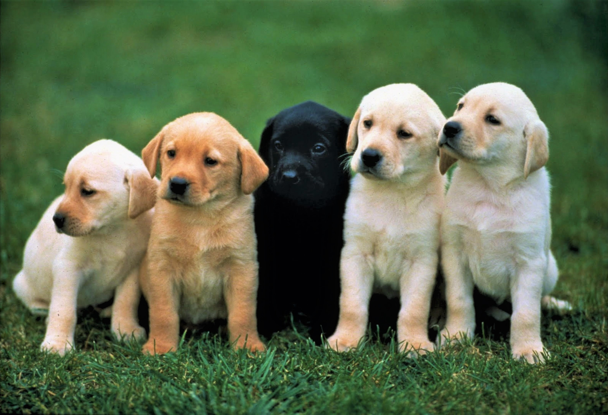

Qual a melhor raça de cachorros para crianças?
Antes de mais nada é importante que você tenha em mente a resposta para algumas questões:
- Mora em casa ou aparamento?
- Quer um cachoro para ser parceiro em atividades? Brincar? Terapia?
- Você mora no campo ou na cidade?
- Alguém da família é alérgica a cães?
- Está disposto a cuidar do cão com frequência?
- É rígido com limpeza?
- Fica preocupado com bagunça?

Para brincar ou esquentar os pés